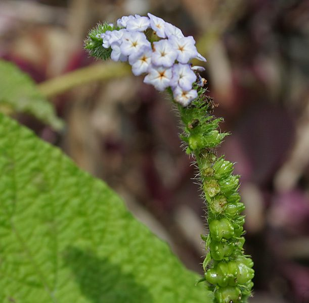

हाथीसूंडीIndian Heliotrope
Heliotropium indicum · Boraginaceae · FLR-0230

- Scientific name वैज्ञानिक नाम
- Heliotropium indicum L.
- Family कुल
- Boraginaceae
- Hindi हिंदी
- हाथीसूंडी
- Local names स्थानीय नाम
- hathisundi, hathi sundi, hatisundi, indian heliotrope
- Status here यहाँ की स्थिति
- native
- Movement आवागमन
- Resident, here all year
- Known from कहाँ दर्ज
- Others have published records from the Basti–Ayodhya districts बस्ती–अयोध्या के ज़िलों से दूसरों के प्रकाशित अभिलेख
- IUCN IUCN
- not evaluated
- Review समीक्षा
- audited and independently read
When to look कब देखें
Expected mainly in June, July, August, September, October, November, December. मुख्यतः जून, जुलाई, अगस्त, सितंबर, अक्टूबर, नवंबर, दिसंबर में अपेक्षित।
हाथीसूंडी / Indian Heliotrope
Heliotropium indicum L. — Boraginaceae
हाथीसूंडी — एक मध्यम आकार की मासिक खरपतवार जो बस्ती के बरसात और सर्दियों के खेतों में उगती है। इसके नीले-सफेद, सुगंधित फूल सर्पिल पुष्पक्रम में लगते हैं, जो हाथी की सूंड की तरह मुड़े हुए होते हैं, जिससे इसका हिंदी नाम बना है। पत्तियों पर मोटे रोएँ होते हैं। इसके कठोर, नुकीले बीज जानवरों की खाल और कपड़ों में आसानी से चिपक जाते हैं।
Quick Identification त्वरित पहचान
| Feature | Description |
|---|---|
| Form | Erect annual herb, 30–70 cm tall, roughly hairy |
| Leaves | Ovate to lanceolate, 3–8 cm long, rough-hairy, margins entire or wavy |
| Flowers | Small, 6–8 mm, pale blue or white, in a distinctive coiled/scorpioid cyme |
| Fruit | A schizocarp that breaks into 4 hard, spiky nutlets, each with hooked processes |
| Stem | Angular, rough-hairy, greenish or purplish |
Field tip: Look for a hairy herb with a distinctive spiral flower cluster (cyme) that looks like an elephant's trunk or scorpion's tail. The small pale blue-white flowers are borne along this coiled spike. The hard, spiky nutlets are the best identifying feature when fruiting.
हिंदी — कैसे पहचानें: सर्पिल पुष्पक्रम, नीले-सफेद फूल, खुरदरी पत्तियाँ। सितंबर-अक्टूबर में फूल-फल।
Morphology आकारिकी
Biometrics (specimens from Basti fields):
| Feature | Measurement |
|---|---|
| Plant height | 30–70 cm |
| Leaf length | 3–8 cm |
| Flower diameter | 6–8 mm |
| Nutlet length | 2–3 mm |
| Cyme length (spiral) | 5–10 cm |
Stem and bark: Angular, rough-hairy, greenish or purplish.
Leaves: Alternate, ovate to lanceolate, 3–8 cm long, with rough, prominent hairs, margins entire or wavy, petioles short.
Flowers: Small, pale blue or white with a yellow centre, borne in a distinctive scorpioid or spiral cyme (which straightens as flowers open). Corolla tube 2–3 mm.
Fruit: A schizocarp (fruit derived from Boraginaceae family) breaking into 4 hard, indehiscent nutlets, each 2–3 mm long, with hooked or barbed projections for zoochory (animal dispersal).
Behaviour & Ecology व्यवहार और पारिस्थितिकता
A warm-season weed of eastern UP that thrives in disturbed, fertile soils. Establishes with monsoon rains and is particularly abundant in field margins and crop borders. The plant is a butterfly larval host and attracts pollinators. The spiky seeds are dispersed by animals, accounting for its wide distribution.
Life Cycle / Phenology जीवन चक्र
| Month / Season | Event |
|---|---|
| May–June | Seed germination; early seedlings |
| July–August | Vegetative growth; rapid expansion |
| September–October | Flowering begins; first spiral cymes |
| October–November | Peak flowering and fruiting |
| November onwards | Seed maturation and dispersal; plant senescence |
One season.
हिंदी: जून-जुलाई में अंकुरण, सितंबर में फूल, अक्टूबर तक बीज।
Associated Species / Interactions संबंधित प्रजातियाँ
- Pollinators: Small bees and flies visit the small flowers.
- Larval host: Butterfly caterpillars feed on Boraginaceae leaves.
- Seed dispersal: Animal fur and clothing.
Pests and Diseases कीट और रोग
- Leaf-eating beetles and caterpillars feed on foliage.
- Leaf spot fungi rarely appear.
Agricultural / Human Relevance कृषि प्रासंगिकता
Today: A common weed of monsoon fields in eastern UP, but not highly competitive due to its modest size. Farmers consider it a minor pest that is easily pulled or hoed. It does not persist in regularly plowed fields. The spiky seeds are a nuisance as they contaminate wool and cotton if the plant is present during harvest.
Control: Hand-weeding before flowering is effective; prevention through clean seed helps.
हिंदी: छोटा और मध्यम नुकसान वाली खरपतवार। कपास और ऊन से कंटीले बीज निकालना मुश्किल है।
Expected Locally स्थानीय रूप से अपेक्षित
Not a field record. Written from published accounts for eastern Uttar Pradesh. No confirmed local sighting yet — if you have seen it, that is what the atlas needs.
अभी तक स्थानीय पुष्टि नहीं। यह विवरण प्रकाशित स्रोतों से है, किसी अवलोकन से नहीं।
Expected in field margins, crop borders, and disturbed ground throughout Basti district during the monsoon and post-monsoon (June–December). GBIF holds published records from these districts.
Distribution वितरण
Global range: Native to tropical Asia; now distributed across the tropics.
In India: Warm regions of the plains and foothills.
In Uttar Pradesh: Common in all districts, particularly in monsoon weeds.
In Basti district / eastern UP: Common weed of monsoon and post-monsoon fields; widely distributed.
Research Questions शोध प्रश्न
- How many seeds does one plant produce, and what is the germination rate after scarification?
- Which butterfly species use Heliotropium indicum as a larval host in Basti? — Rearing experiment.
- Can children observe the spiral cyme straightening as flowers open? — Simple phenology observation.
- How far do the spiky seeds travel on wool or cloth, and what percentage stick? — Adhesion test.
- क्या हाथीसूंडी की मौजूदगी कपास की फसल में समस्या पैदा करती है? — Survey in cotton fields.
Similar Species मिलती-जुलती प्रजातियाँ
| Species | Key Difference | हिंदी |
|---|---|---|
| Heliotropium strigosum (Woolly Heliotrope) | Smaller, more hairy; endemic to peninsular India, not expected in UP | दक्षिण भारतीय, बहुत छोटा |
| Trichodesma zeylanicum (Leafy-stemmed Heliotrope) | Leaves larger and broader; leafy-winged stem; coarser plant | बड़ी पत्तियाँ, डैने वाला तना |
Field rule: Indian Heliotrope's spiral cyme of small pale blue-white flowers and hairy leaves are distinctive. The spiky nutlets are the best identifying feature.
Taxonomy & Classification वर्गीकरण
Original description. Described by Carl Linnaeus in 1753 in Species Plantarum as Heliotropium indicum. Type locality is India.
Subspecies. Monotypic.
Family and order placement. Order Boraginales, family Boraginaceae (the borage family), which also includes forget-me-nots.
Phylogenetic notes. Heliotropium is closely related to Trichodesma and other scorpioid-cymose genera in Boraginaceae.
IUCN status rationale. Not evaluated. Widely distributed; not threatened.
Photo Gallery फोटो गैलरी
No photos yet — add field photos to media/species/indian_heliotrope/ and run node scripts/sync_photos.js.
Wanted photos:
- Whole plant in field
- Spiral flower cyme detail
- Spiky nutlets close-up
- Plant with butterfly larva
References संदर्भ
- Linnaeus, C. (1753). Species Plantarum, Vol. 2, p. 130.
- Hooker, J.D. (1882). Flora of British India, Vol. 4.
- Duthie, J.F. (1903). Flora of the Upper Gangetic Plain.
- Botanical Survey of India. State Flora Series: Flora of Uttar Pradesh. BSI, Kolkata.
- Yadav, R.P. & Malik, A. (1982). Weed flora of eastern Uttar Pradesh. Indian Journal of Agricultural Sciences.
- GBIF Occurrence Data — Heliotropium indicum (2026).
Source file: species/flora/weeds/indian_heliotrope.md